Wolfenstein
| Pagina Principal | Historia | Personagens & Media | Jogos |
卐 Os alemaes ganharam a segunda guerra mundial... E agora? 卐
Historia
A história da série Wolfenstein baseia-se à volta do agente americano
William J. Blazkowicz [+]
na missão longa de resistência contra a recente ascensão do partido nacional-socialista ao poder da Alemanha, liderado por
Adolf Hitler [+]
Da'at Yichud דעת ייחוד: Uma sociedade avançada na antiga Mesopotâmia (cerca de 2000 a.C.) criou tecnologias incríveis e escondeu-os em cofres secretos pelo mundo para evitar a sua exploração
A descoberta pelos alemaes: Rei Otto I do Império Romano-Germânico é o primeiro a descobrir os pergaminhos de
Da'at Yichud e contrói o
Castle Wolfenstein [+]
(Século X);
Estas tecnologias são mantidas em segredo, sendo usado para vencer batalhas medievais através de monstros e tecnologias primitivas até que chega às mãos do
Reich
pelas escavações arqueológicas lideradas por
Helga von Schabs [+]
Personagens
Aliados
| William Blazkowicz | Fergus Reid | Probst Wyatt III | Anya Oliwa | Set Roth |
|---|---|---|---|---|
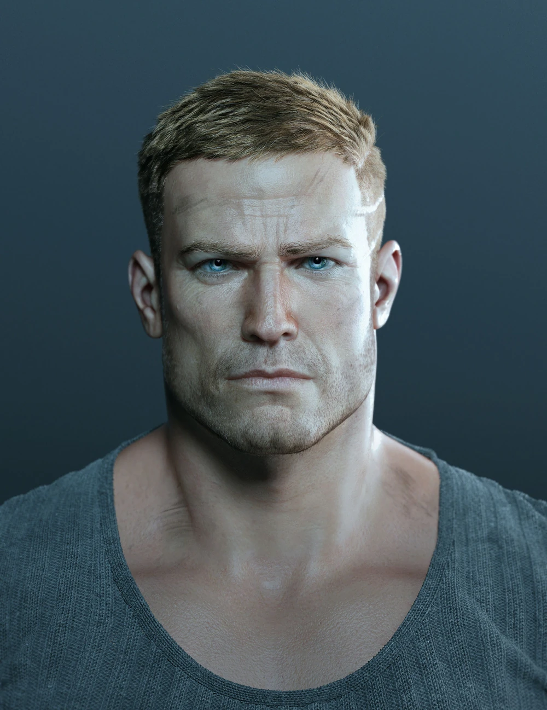 |
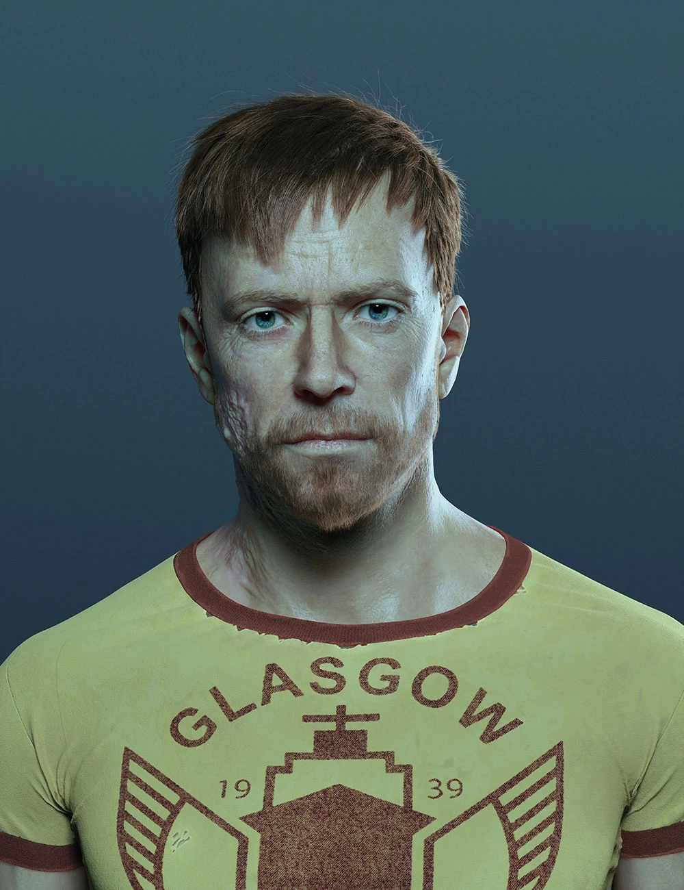 |
|||
| Agente americano | Agente Escocês | Soldado americano | Enfermeira polaca | Líder atual da Da'at Yichud |
Inimigos
| Adolf Hitler | General Wilhelm Strasse | General Irene Engel | Helga von Schabbs |
|---|---|---|---|
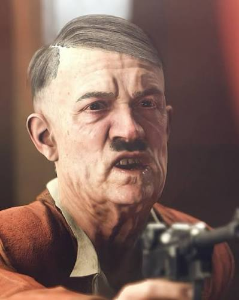 |
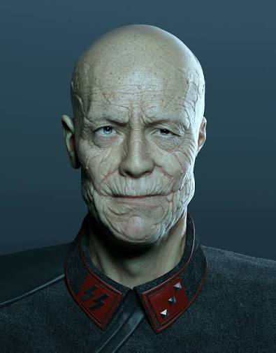 |
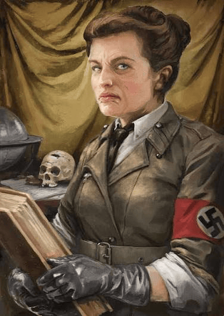 |
|
| Líder do Reich | Cientista alemão | Vilã principal | Arqueóloga alemã |
| SuperSoldaten | Panzerhund | Wehrmacht | Kommandanten |
|---|---|---|---|
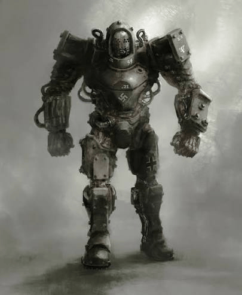 |
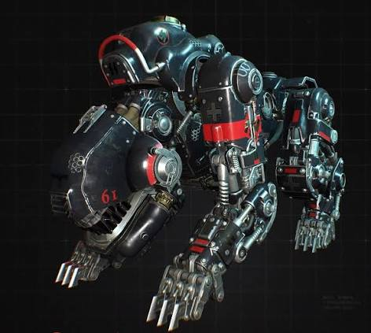 |
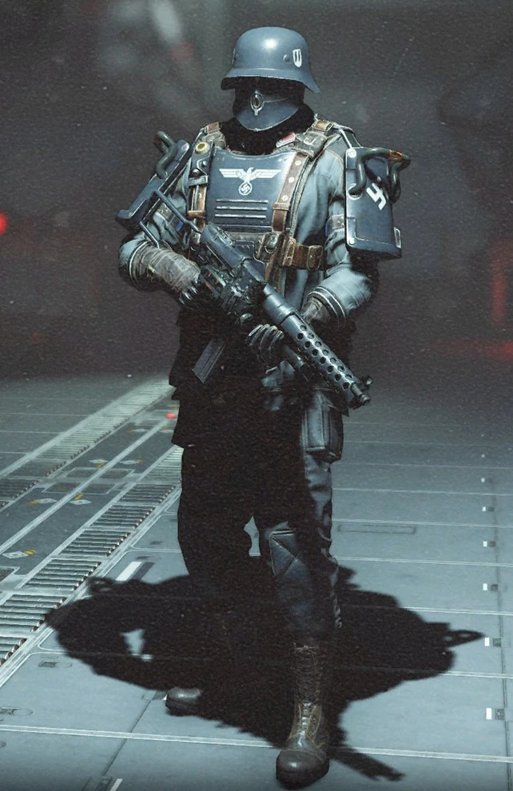 |
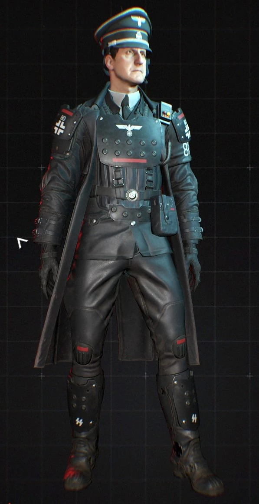 |
| Soldado mecha robô | Cão (hund) mecha robô | Soldado básico | Comandante básico |
Outros
| Haus in Neu Berlin | House in New Orleans |
|---|---|
| Paródia alemã da música ao lado "House of the Rising Sun", para mostrar a subsituição dos americanos pelos alemães como símbolo internacional 卐 |
Música americana original |
Jogos
| Jogos Clássicos | ||
|---|---|---|
| Primeiros jogos 3D | 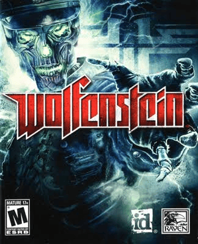 |
|
| Wolfenstein: The New Order | 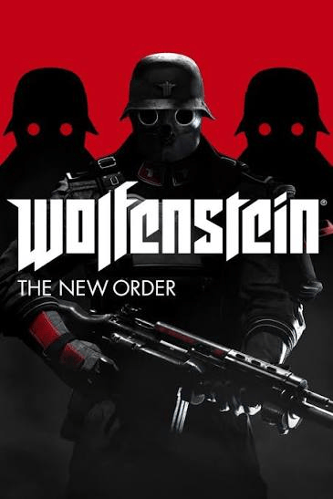 |
|
| Wolfenstein: The Old Blood | 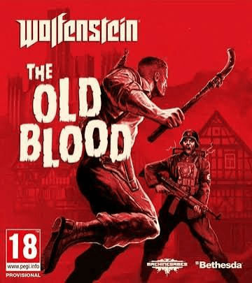 |
|
| Wolfenstein II: The New Colossus | 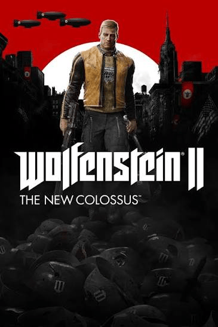 |
|
| Wolfenstein: Youngblood | 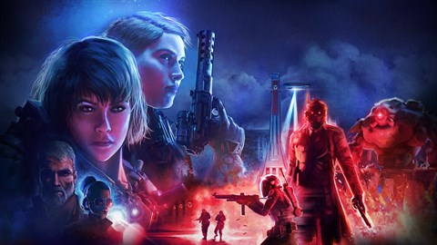 |